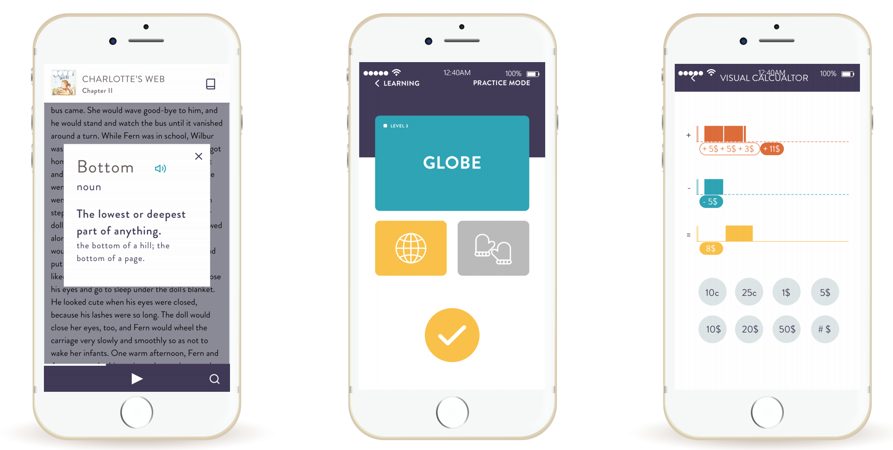

Problem
Providing resources to the adult illiterates that could offer the ability to perform daily tasks on their own.
Skills Developed
User research, contextual Inquiry, sketching, personas, design synthesis, brainstorming, paper prototyping, usability testing, high fidelity prototyping, interviewing, needs assessment, collaboration.
Solution
A mobile app that can assist the user at any context and situation.
Team
Denise Baran, Kesava Karthik Kota, Kolli Vishal Reddy, Nalin Bhatia, Xindi Wang
Design Process

Problem Statement
For most of the people reading this, it might be hard to imagine what it feels like to be illiterate. In fact, most, if not all, tasks of daily life in a modern society involves literacy skills: using Google map to find out the itinerary to a place; reading ingredient information on the package of food; locating specific information on a poster. For people with an insufficient level of literacy, these tasks can be difficult, and they might need help from other people. Our team is curious about the problems faced by people with low illiteracy level and shaped a solution that can help and empower them.
Interviews with literacy experts
Literacy experts are people who lead literacy programs and work with learners. Due to their rich experience with illiterate learners, they have highly valuable insights about the characteristics and need of our target user. We interviewed with two literacy experts: literacy specialist at Detroit Public Library, and Allison Austin, program manager at Washtenaw Literacy.
Before talking to them, we developed an interview protocol containing questions that we could ask in order to establish a firm understanding of the problem at hand. The interview was conducted both online and face-to-face. Through talking with literacy specialist, we gathered much useful information. Interview and Contextual Inquiry with the target user.
Target Audience
From out research its is learn that there are mostly two kinds of adult illiterates, one who can perform daily tasks and other who couldn't. Learning and understnading the situation of the illiterates, we reiterated our focus on the users who cannot perform basic daily tasks.
Painpoints
From our research, it is clear that a significant section of the US adult population does not have the literacy skills required to perform many basic tasks. From our interviews came essential findings related to our target community. The key findings include the pain points faced by the targeted users and the leverage we can use to shape a design.
Solution
Based on the critical findings gathered from literacy review, competitive analysis, and user research, we conducted brainstorming and evaluated design ideas. In this section, we are introducing our final solution: Litebox, a mobile app that provides both immediate help with daily tasks and also long-term assistance with learning. The app includes two main sections: daily assistant and learning assistant.
Daily Assistant: Litebox provides a helper camera with two modes. Information mode, which helps to recognize buildings, signboards, etc. and save the information as a flash card; and text mode, which allows the user to scan the text and listen to the text simultaneously.
Learning Assistant: The learning assistant focuses on three aspects: building vocabulary, improving reading skills, and understanding calculations.
Design Rationale
Why did we design a mobile app instead of other forms of interactive products? This decision is made based on our user research. As most people in our target community have a smartphone and know the basic usage of it, they can just download the app on their phone, which doesn’t create an extra burden for them. Throughout the design of Litebox, we followed the following principles:
Conclusion
We believe that our solution, Litebox, will help the adult illiterates to perform the daily activities efficiently than before. Understanding and learning by themselves without any other help can boost the user’s confidence and make them use the application more frequently. We intend to shape a solution that can be accessed whenever required and we believe that the availability of Litebox will make the users learn the unknown and develop a curiosity to determine more. In conclusion, we think that the application can both help and empower people with literacy problems.